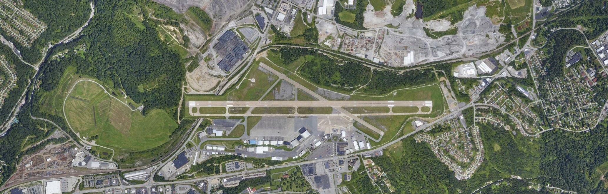

Formally educated in architecture and construction management, I work at the intersection of construction and technology, grounded in a deep understanding of how projects actually get built, bringing together teams, consultants, and contractors to keep work on cost, on schedule, and true to intent, from the first drawing to the final punch list. My final smash across the net is a strong grip on AI for construction, sharpened across multiple builds of my own that bring those workflows to life.
Lego kits, puzzles, blueprints, badminton, cycling, and memoirs taught me to notice details, stay patient, and keep building with care.
Arch + AEC-M
Education
I've been building since before I knew it was a career.
From wacky roofs to real ones.
Design & Construction Management✦ Solution Design & Demos✦ Stakeholder coordination✦ Technical Discovery & Scoping✦ Preconstruction & Value Engineering✦ Implementation & Configuration✦ AI in Construction✦ Customer Onboarding & Training✦ Cycling✦ Integration & API Enablement✦ City personification✦ Requirements Gathering✦ Puzzles✦ Roadmap & Adoption Strategy✦
Projects & Work
CONTECH
ReVIVE — Condemned Property Prioritisation Tool, Pittsburgh
Developed a weighted hazard scoring framework using spatial data integration across Pittsburgh's fragmented municipal systems to prioritise condemned buildings for demolition. Simulated a 41% reduction in average resolution time from 22 to 13 months.
CONTECH
Change Register — Capital Project Change Management
A workflow-automation system of record for construction change where the log is the workflow, not a spreadsheet updated after the fact. A change gets one identifier the day it's raised and keeps it through estimate, contractor proposal, approval, and executed change order, with deterministic rules handling numbering, approval tier routing, and contingency escalation while AI guardrails keep every judgment call with a human.
CONTECH
Delay Claim Forensics Agent
An agentic con-tech tool that joins RFIs, change orders, and daily reports to CPM schedule movement to pinpoint which event shifted the critical path and by how many days. A deterministic CPM engine computes every time-impact figure while the model only proposes, so no assertion reaches the report unless it traces to a source document.
CONSTRUCTION
Worldmark 2.0 - Bharti Realty Mega Commercial
$2B, 3.5M sq ft LEED-certified mixed-use development in Aerocity, New Delhi. Coordinated 25+ stakeholders across design, MEP, and regulatory approvals as Project Architect at Arcop Associates.
CONSTRUCTION
Advanced Pharmaceutical Manufacturing Campus
Greenfield manufacturing campus for a leading life-sciences client, delivered as an Assistant Project Manager for project controls with Mace Consult. Owned cost control and forecasting, change management, and progress measurement across a $9B program, coordinating concurrent contractor packages and keeping owner reporting accurate as the build scaled.

CONSTRUCTION
Runway 10-28 Safety Area Improvements — Allegheny County Airport (AGC)
FAA-mandated airside safety upgrades at West Mifflin, PA. Project management internship with Hill International as owner's representative, supporting cost controls, contract administration, sustainability initiatives, and FAA compliance across aviation.
What Moves Me
ALWAYS LEARNING. ALWAYS BUILDING.
Constantly exploring the built environment and where AI fits in. Always happy to chat.